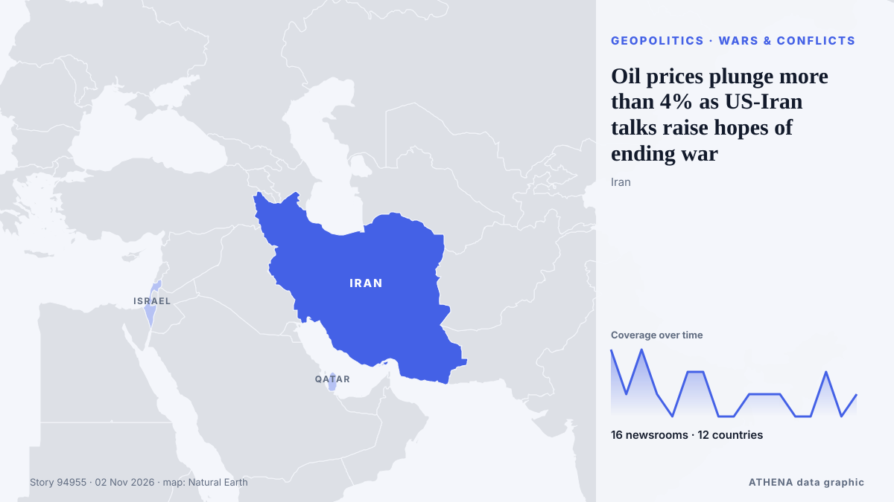

Oil prices plunge more than 4% as US-Iran talks raise hopes of ending war

Both oil benchmarks are down in early trading. de The Business Times
Informado de forma independiente por 16 medios de 12 países desde el 1 nov; el primero fue The Business Times; la cobertura va perdiendo fuerza. ATHENA califica el riesgo como alto (6.7/10), sobre todo por la gravedad del daño descrito y su alcance geográfico y sectorial. La confianza es del 85 % (alta): lo corroboran 16 medios independientes, con una fiabilidad media de las fuentes del 76 %. Medios por país: Pakistán (3), Singapur (2), Sri Lanka (2). Cobertura: del 1 nov al 2 nov, 17 horas.
Por qué importa: Este seguimiento cubre los hechos que hay detrás de los precios de la energía —decisiones de la OPEP+, cortes de suministro, conflictos en rutas marítimas y demanda—, no los precios en sí.
Qué ha cambiado: 18 informaciones nuevas de 15 redacciones en las 24 horas hasta el 2 nov.
Primer titular: Oil slips more than 1% as talks continue on ending Iran war
Los titulares se muestran en inglés, tal como se publicaron.
De un vistazo
Seleccionado, puntuado y redactado por la metodología publicada de ATHENA. Ningún editor interviene en eventos concretos. Cómo se elabora ›
| 01 Nov 23:51 UTC | 3 |
|---|---|
| 02 Nov 00:51 UTC | 1 |
| 02 Nov 01:51 UTC | 3 |
| 02 Nov 02:51 UTC | 1 |
| 02 Nov 03:51 UTC | 0 |
| 02 Nov 04:51 UTC | 2 |
| 02 Nov 05:51 UTC | 2 |
| 02 Nov 06:51 UTC | 0 |
| 02 Nov 07:51 UTC | 0 |
| 02 Nov 08:51 UTC | 1 |
| 02 Nov 09:51 UTC | 1 |
| 02 Nov 10:51 UTC | 1 |
| 02 Nov 11:51 UTC | 0 |
| 02 Nov 12:51 UTC | 0 |
| 02 Nov 13:51 UTC | 2 |
| 02 Nov 14:51 UTC | 0 |
| 02 Nov 15:51 UTC | 1 |
| 02 Nov 00:18 UTC | 5.0 |
|---|---|
| 02 Nov 00:27 UTC | 6.3 |
| 02 Nov 06:56 UTC | 7.3 |
| 02 Nov 10:40 UTC | 6.7 |
| 02 Nov 11:18 UTC | 7.2 |
| 02 Nov 14:32 UTC | 6.8 |
| 02 Nov 16:41 UTC | 6.7 |
Por qué estas cifras
Importancia
Riesgo
Confianza
La cobertura: quién informó y cuándo
titular tal como se publicó · abre el original- The Business Times · SingapurOil slips more than 1% as talks continue on ending Iran war
- New Straits Times · MalasiaOil slips more than 1pct as talks continue on ending Iran war
- APA (English) · AzerbaiyánOil prices fall more than 1% as talks to end war on Iran continue
- Ada Derana · Sri LankaOil slips more than 1% as talks continue on ending Iran war
- Times of India · IndiaOil prices today: Crude falls over 1% as Iran-Qatar talks raise hopes of diplomacy
- MyJoyOnline · GhanaOil slips more than 1% as talks continue on ending Iran war
- Business Recorder · PakistánOil prices ease 3% on optimism for Qatari-led talks on ending Iran war
- Business Recorder · PakistánIndian shares set for positive start on talks to end Iran war, strong Reliance earnings
- Shafaq News (English) · IrakOil slides below $110 threshold on diplomacy
- Asharq Al-Awsat (English) · Arabia SaudíOil Prices Ease 3% on Optimism for Qatari-Led Talks on Ending Iran War
- Arab News · Arabia SaudíOil prices ease 3% on optimism for Qatari-led talks on ending Iran war
- Business Recorder · PakistánIndia bonds poised to gain as oil slips; US midterms in focus
- CNA (Channel NewsAsia) · SingapurOil drops over 4% on hopes of progress in talks on ending US-Iran war
- Offshore Engineer · Estados UnidosOil Prices Tumble Nearly 4% as US-Iran Peace Hopes Grow
- Ada Derana · Sri LankaOil drops almost 4% on hopes of progress in talks on ending US-Iran war
- Türkiye Today · TurquíaOil prices plunge more than 4% as US-Iran talks raise hopes of ending war
- NDTV · IndiaOil Prices Fall 6% Over Renewed Hopes Of US-Iran Peace Talks
- News of Bahrain · BaréinOil Prices Plunge 6% as US-Iran Talks Raise Hopes of Ending War